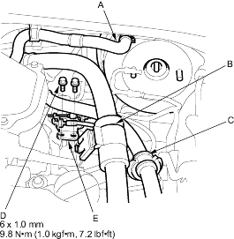
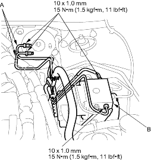
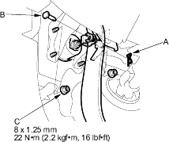
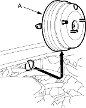

- Remove the master cylinder (see page 19-18).
- Disconnect the vacuum hose (A) from the brake booster.

- Remove the air conditioner hose (B) and power steering hose (C) from their respective holders.
- Remove the flange bolts (D) and throttle cable holder (E).
- Remove the brake pipes (A) from the ABS modulator (B).

- Remove the under-dash cover and fuse/relay box in the passenger compartment.
- Remove the clip (A) and the joint pin (B) and disconnect the yoke from the brake pedal.

- Remove the brake booster mounting flange nuts (C).
- Remove the brake booster (A) from the engine compartment.

- Install the brake booster in the reverse order of removal and note these items:
- Adjust the pushrod clearance before installing the brake booster (see page 19-29).
- Use a new clip whenever installing.
- After installing the brake booster and master cylinder, fill the reservoir with new brake fluid, bleed the brake system (see page 19-7), and adjust the brake pedal height and free play (see page 19-5).